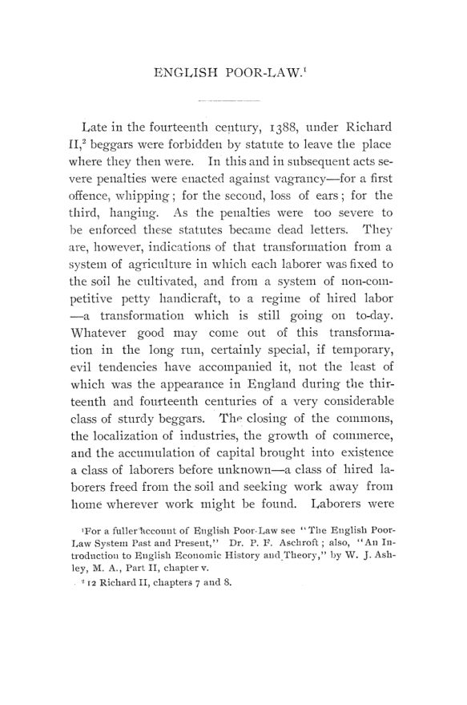

Cummings, 1895: os pobres que os estados devolviam uns aos outros
Leitura: 10 min
Em 1895, John Cummings comparou as leis de assistência de Massachusetts e Nova York: regras de domicílio, reembolsos por cabeça e pobres despachados de um estado a outro como carga sem dono.


Em 12 de novembro de 1879, os conselhos estaduais de caridade se reuniram na cidade de Nova York para discutir uma queixa. Massachusetts, dizia o conselho nova-iorquino, deportava para Nova York um número muito grande de indigentes. Pessoas que nunca tinham morado lá um único dia eram embarcadas de volta para algum estado do Oeste ou do Sul, levadas até a divisa e deixadas em território de Nova York, na suposição de que as autoridades locais as “passariam adiante”. Nova York não tinha como retaliar: não havia estados a leste de Massachusetts de onde viessem migrantes.
A cena abre Poor-Laws of Massachusetts and New York, de John Cummings, publicado nas Publications of the American Economic Association em julho de 1895. O autor escolheu os dois estados porque cada um encarnava um modelo que se espalhou pelo país: a assistência administrada pela cidade (town), em Massachusetts, e pelo condado (county), em Nova York. O próprio Cummings pondera que as acusações nova-iorquinas eram fortes demais e que havia outro lado: Massachusetts devolvia os imigrantes ao porto que os admitira e cobrara por eles.
De onde vinham essas leis?
Da Inglaterra. Em 1388, sob Ricardo II, mendigos foram proibidos por lei de deixar o lugar onde estavam; leis seguintes previam açoite, perda das orelhas e forca, penas tão severas que viraram letra morta. A lei de Elizabeth, de 1601, mandou cada paróquia nomear inspetores dos pobres, cobrar uma taxa semanal e dar trabalho aos capazes. A lei de 1662 permitiu remover recém-chegados em até quarenta dias, se ocupassem imóvel de valor anual inferior a dez libras. Cummings vê nisso o retrato de uma transição: o trabalhador deixava de estar preso à terra e passava a depender do dono do capital.
Os colonos trouxeram a lógica consigo. Em Massachusetts, cada cidade cuidava de não admitir estranhos que parecessem destinados a virar encargo público, porque todo proprietário e eleitor tinha interesse em manter os impostos baixos. A instrução enviada de Londres em 1629 a John Endecott já pedia que nenhum ocioso fosse tolerado na colônia.
Como se ganhava o direito à assistência em Massachusetts?
Pelo domicílio legal, o settlement. Em 1659, três meses de residência sem aviso para sair bastavam. Em 1701, o prazo subiu para doze meses. A lei de 1766 foi além: dali em diante nenhuma residência, por mais longa, dava domicílio; era preciso aprovação da cidade em assembleia. A lei de 1794 listou doze maneiras de obtê-lo, e a mais comum exigia dez anos de residência e cinco de impostos pagos. Cummings chama a lei de reacionária: feita para uma comunidade agrícola e fixa, aplicada a uma economia industrial com população flutuante.
“cada gota de sangue de Massachusetts carregava consigo o domicílio” (“every drop of Massachusetts blood carried with it settlement”)
O orgulho tinha avesso. O domicílio, uma vez obtido, nunca se perdia, e bisnetos de quem o tivera podiam ser mandados de volta de outros estados para serem sustentados ali. Ao mesmo tempo, as condições eram tão duras que grande parte da população nunca o conseguia. Quem não tinha domicílio em cidade nenhuma virava pobre do estado, e o estado reembolsava as cidades. Em Nova York, ao contrário, o domicílio se ganhava com residência curta e se perdia com um ano de ausência. Cada lado presumia que a lei do outro era igual à sua.
O que deu errado com o reembolso por cabeça?
As cidades administravam os pobres do estado e mandavam a conta. Segundo relatório de Josiah Quincy, entre 1791 e 1820 o encargo do estado quintuplicou, enquanto a população não chegou a dobrar. A resposta foi limitar o reembolso: em 1820, um dólar por semana por adulto e 55 centavos por criança; em 1831, dez centavos por dia; em 1835, sete. O gasto total caiu, mas o número de pobres do estado continuou a subir.
A diferença tinha explicação. Quando a auditoria passou à comissão de estrangeiros, descobriram-se cobranças indevidas: cidades que cobravam por pobres já mortos ou lançavam uma família inteira na conta do estado durante o inverno por uma ajuda mínima, ou nenhuma. Os questionários do tesoureiro voltavam mal respondidos ou não voltavam. Cummings conclui que o sistema deixava o estado à mercê das cidades e premiava o pauperismo. Mais de quatro quintos dos pobres do estado eram, então, estrangeiros ou filhos de estrangeiros.
Em 1852, a legislatura mandou construir três asilos estaduais, cada um para quinhentos internos, abertos em 1º de maio de 1854. A concentração permitia separar velhos de jovens, sãos de loucos, curáveis de incuráveis. Em 1863 veio o Board of State Charities, conselho central de cinco membros sem remuneração, com um secretário e um agente geral. Daí em diante, diz o autor, quase toda mudança na lei partiu de recomendação desse conselho.
Ajudar em casa ou internar?
A questão atravessa o livro. Em 1821, Quincy concluíra que socorrer os pobres em suas próprias casas era o modo mais caro e o mais destrutivo do hábito de trabalho, e que o mais econômico era o asilo com oficina, de preferência agrícola.
“de todas as formas de prover aos pobres, a mais perdulária” (“of all modes of providing for the poor, the most wasteful”)
A experiência mudou a avaliação. Depois de 1854, quem não tinha domicílio precisava ir para um asilo estadual às vezes distante, o que transformava em pobre permanente uma família que sairia do aperto com pouca ajuda. A lei passou a permitir ajuda temporária local, reembolsada pelo estado, por até quatro semanas e até um dólar por pessoa ou cinco por família. Um inspetor ouvido por Cummings resumiu: quem entra no asilo tende a ficar para sempre; quem recebe ajuda no momento difícil às vezes nunca mais aparece.
O autor não romantiza a ajuda domiciliar. Cita Seth Low, para quem, nas grandes cidades, ela tendia a virar fonte de corrupção política. Registra que Cambridge reduziu o socorro externo de US$ 80 mil para US$ 35 mil em um ano, em boa parte por entregar as mercadorias numa carroça coberta com o letreiro “Overseers of the Poor”. A experiência foi suspensa: os pobres dignos preferiam sofrer a pedir, e os desavergonhados não se intimidavam. O teste de trabalho, como o depósito de lenha, cumpria melhor a função de afastar quem não precisava.
“Evite Lowell. Acomodações ruins.” (“Avoid Lowell. Poor accommodations.”)
A anotação, encontrada no caderno de um andarilho, é a prova mais curta do argumento: cidade que distribui sem critério atrai os vadios da vizinhança; cidade que exige contrapartida sai do roteiro.
Como Nova York resolveu o mesmo problema?
Pelo condado. Sob os holandeses, os diáconos cuidavam dos pobres, e uma ordem de 1661 passou a exigir que quem viesse de fora trouxesse certificado de caráter e pobreza do lugar de origem. A lei de 1788 declarou que cada cidade sustentaria os seus pobres e previa açoite para quem voltasse depois de removido: até 39 chibatadas para homens e 25 para mulheres. O domicílio se ganhava com um ano de residência, e por isso uma parcela maior da população estava legalmente domiciliada do que em Massachusetts.
A virada veio em 1824. A lei mandou erguer asilos de condado e proibiu remover um pobre de um condado para outro: quem adoecesse e empobrecesse seria sustentado onde estivesse. Transportar um pobre para outro condado passou a custar multa de cem dólares ou seis meses de prisão. Durante meio século o estado não reconheceu pobres seus; lidava com pacientes, alunos e órfãos. Só em 1873 criou a figura do pobre do estado: o incapacitado que não tivesse residido sessenta dias em nenhum condado no ano anterior. A grande despesa estadual nasceu de outro lugar, os doentes mentais, que a lei de 1890 previa transferir integralmente dos condados para o estado.
Por que um livro sobre assistência termina com leis de imigração?
Porque, para Cummings, boa parte da legislação de assistência nos Estados Unidos tomou a forma de restrição à migração de pobres: primeiro entre aldeias, depois entre estados, por fim entre países. Os estados cobravam dos navios uma taxa por passageiro e fiança por quem parecesse destinado à caridade pública. Em Nova York, a taxa de comutação passou de um dólar em 1847 para US$ 2,50 em 1869. Uma decisão da Suprema Corte, que Cummings data de 1872, anulou as leis estaduais de imigração, e o Congresso aprovou em 1882 uma lei nacional com taxa de cinquenta centavos por estrangeiro desembarcado.
Os apêndices reproduzem a lei de 1882 e a de 1891, que excluía, entre outros, os indigentes e as “pessoas suscetíveis de se tornar encargo público”, além de reforçar a lei de 1885 contra a importação de trabalhadores sob contrato. A fórmula das velhas leis paroquiais chegara ao direito federal.
Na minha leitura
Leio o livro de Cummings como um estudo de federalismo fiscal antes do nome. A regra de domicílio de Massachusetts não falhou por crueldade, mas por desenho: cada cidade tinha incentivo para empurrar pobres para o estado, o estado tinha incentivo para empurrá-los para fora da divisa, e o vizinho recebia a conta sem ter voz na decisão. O reembolso por cabeça sem auditoria completou o quadro. Quando quem executa a despesa não é quem a paga, a cobrança indevida deixa de ser desvio isolado e vira resposta previsível.
O segundo ensinamento é sobre o desenho da ajuda. O livro registra a passagem do dogma do asilo para uma ajuda temporária, pequena e fiscalizada, e mostra que a escolha não era entre generosidade e rigor, mas entre instrumentos com efeitos diferentes sobre a família e sobre o caixa. Ajuda que exige internação desfaz vínculos; ajuda sem verificação vira clientela. Entre um extremo e outro, o que funcionou foi regra clara, valor limitado no tempo e um órgão central capaz de conferir as contas.
Glossário
- poor-law
- lei de assistência aos pobres, custeada por imposto local, de origem inglesa.
- settlement (domicílio legal)
- vínculo jurídico com uma cidade ou condado que dava direito a ser socorrido ali.
- overseers of the poor
- administradores locais encarregados de arrecadar e distribuir a ajuda aos pobres.
- pobre do estado
- indigente sem domicílio em nenhuma cidade, cujo sustento era reembolsado pelo tesouro estadual.
- ajuda externa (outdoor relief)
- socorro dado em casa, em dinheiro ou mercadorias, sem internação em asilo.
- head money
- taxa cobrada dos navios por passageiro estrangeiro desembarcado, destinada a custear o socorro aos imigrantes.
- teste de trabalho
- exigência de alguma tarefa, como rachar lenha, em troca da ajuda, para afastar quem não precisava.
Fontes
- Poor-Laws of Massachusetts and New York: With Appendices Containing the United States Immigration and Contract-Labor Laws (pp. 15–135). JSTOR · Internet Archive (PDF)
- Sumário da edição no JSTOR: Publications of the American Economic Association, vol. 10, nº 4.
Documento em domínio público (EUA, publicado antes de 1931), via JSTOR Early Journal Content e Internet Archive. Resumo e comentário do autor deste site, sem afiliação com a American Economic Association. Encontrou um erro? Escreva: a correção é publicada no próprio texto, com data.
← Nº 46 · Nova York, 1894: o cheque, o monopólio e os desempregados Nº 48 · Hollander, 1895: Ricardo por carta, da moeda às máquinas →